5
Đội hình: bảng sức mạnh
Tám đội hình cấp 6 dựng từ kho thật, mọi người 2 sao, tự xếp vị trí như máy. Mỗi cặp đá 300 trận.
| # | Đội hình mẫu (cấp 6, mọi người 2 sao) | Hệ kích được | Tổng giá | Điểm trung bình |
|---|
| 1 | Đội Trưởng (giá 5) | | 28đ | 89% |
| 2 | Lò Tạ thủ chắc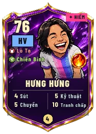 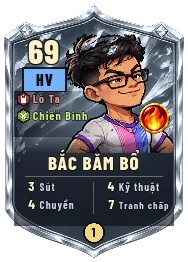 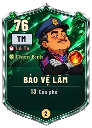 | | 16đ | 70% |
| 3 | Quán Xá Nộ | | 18đ | 64% |
| 4 | Hàng Rong chuyền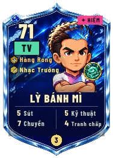 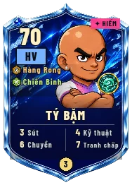 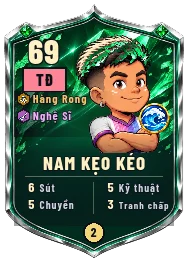 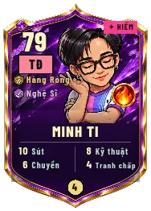 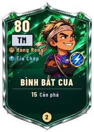 | | 18đ | 48% |
| 5 | Tay Nghề sút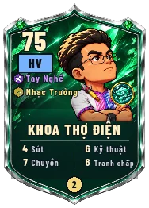 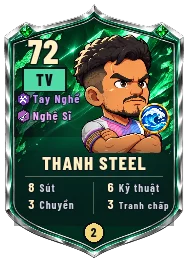 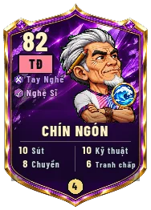 | | 15đ | 44% |
| 6 | Bánh Xe rê dắt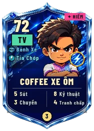 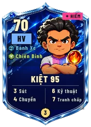 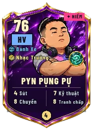 | | 16đ | 31% |
| 7 | Ngôi Sao tấn công | | 23đ | 31% |
| 8 | Người rẻ trộn | | 8đ | 21% |
Điểm = thắng tính 1, hoà tính nửa. Mỗi cặp đá 300 trận, đổi sân nhà sân khách xen kẽ.
| Hàng gặp cột | 1 | 2 | 3 | 4 | 5 | 6 | 7 | 8 |
|---|
| 1. Đội Trưởng (giá 5) | – | 98 | 73 | 77 | 92 | 97 | 97 | 93 |
|---|
| 2. Lò Tạ thủ chắc | 2 | – | 81 | 46 | 69 | 100 | 98 | 98 |
|---|
| 3. Quán Xá Nộ | 27 | 19 | – | 88 | 51 | 93 | 81 | 91 |
|---|
| 4. Hàng Rong chuyền | 23 | 54 | 12 | – | 39 | 70 | 50 | 91 |
|---|
| 5. Tay Nghề sút | 8 | 31 | 49 | 61 | – | 42 | 62 | 54 |
|---|
| 6. Bánh Xe rê dắt | 3 | 0 | 7 | 30 | 58 | – | 62 | 58 |
|---|
| 7. Ngôi Sao tấn công | 3 | 2 | 19 | 50 | 38 | 38 | – | 68 |
|---|
| 8. Người rẻ trộn | 7 | 2 | 9 | 9 | 46 | 42 | 32 | – |
|---|
Bảng thứ hai đọc theo hàng: ô xanh là hàng thắng cột, ô đỏ là thua. Có vài cặp khắc nhau rất rõ: Lò Tạ thủ chắc thắng Bánh Xe và Ngôi Sao gần như tuyệt đối; Quán Xá Nộ ăn Bánh Xe 93% nhưng chỉ được 19% trước Lò Tạ.
Ba đội hình đề xuất
Lò Tạ thủ chắc
Đáng chơi nhất theo giá 16 vàng · đứng thứ 2
Lò Tạ 3 · Hậu Vệ 3 ·  Ngôi Sao. Bốn hậu vệ Lò Tạ (Dino, Vũ Xe Ba Gác, Hưng Hứng, Bắc Băm Bổ) cộng thủ môn Bảo Vệ Lâm cũng Lò Tạ: đủ 5 người, hệ Lò Tạ đạt mốc cao nhất (người hệ này Tranh chấp +3, cả đội Cản phá +4), cộng Hậu Vệ 3 thêm Cản phá +6. Hai cái tên rẻ (Vũ 2đ, Bắc 1đ) dễ lên 3 sao. Rafa đứng mũi để ghi bàn.
Ngôi Sao. Bốn hậu vệ Lò Tạ (Dino, Vũ Xe Ba Gác, Hưng Hứng, Bắc Băm Bổ) cộng thủ môn Bảo Vệ Lâm cũng Lò Tạ: đủ 5 người, hệ Lò Tạ đạt mốc cao nhất (người hệ này Tranh chấp +3, cả đội Cản phá +4), cộng Hậu Vệ 3 thêm Cản phá +6. Hai cái tên rẻ (Vũ 2đ, Bắc 1đ) dễ lên 3 sao. Rafa đứng mũi để ghi bàn.
Đồ nên gắn: Ống Đồng Tắc Sạch hoặc Xích Bám Đuổi cho hậu vệ Lò Tạ (hợp người), Bóng Xé Lưới hoặc Bóng Móc Lửa cho Rafa. Thủ môn: Khiên Gác Đền.
Quán Xá Nộ
Tung chiêu sớm 18 vàng · đứng thứ 3
Quán Xá chỉ cần 2 người là cả đội +25 Nộ đầu hiệp, nên tuyệt kỹ nổ sớm hơn đối thủ. Khang Hy (thủ môn) cũng là Quán Xá. Đổi lại hàng thủ mỏng, nên rất sợ Lò Tạ.
Đồ nên gắn: Bóng Da + Nước Tăng Lực ghép thành Bóng Móc Lửa cho tiền đạo (Dũng Trà Đá, Khang Shaker). Nếu có, Chai Nước Thánh Hẻm hoặc Băng Đội Trưởng Đỏ (cả đội +15 Nộ) để tuyệt kỹ nổ còn sớm hơn.
Đội Trưởng
Mạnh nhất cuối ván 28 vàng · đứng thứ 1
Đủ 3 đội trưởng: các đội trưởng +3 mọi chỉ số, cả đội +30 Nộ. Được 89% số điểm trước bảy đội hình còn lại. Trong ván máy, đội kích Đội Trưởng bậc 3 vô địch một nửa số lần. Nhưng 4 người giá 5 chỉ ra ở cấp 6 với 11% mỗi ô, nên đây là đích đến cuối ván, không phải kế hoạch từ đầu. Giữ nền Lò Tạ rồi thay dần bằng đội trưởng khi gặp.
Hai hướng nên tránh: Bánh Xe rê dắt và Tia Chớp bậc 2. Trong đấu đội hình, Bánh Xe chỉ được 31%; trong ván máy, đội kích Tia Chớp bậc 2 vô địch có 6%. Đội Ngôi Sao tấn công tốn 23 vàng mà chỉ được 31%: ba người Ngôi Sao không cộng thêm gì vì hệ này chỉ có một mốc 1 người.